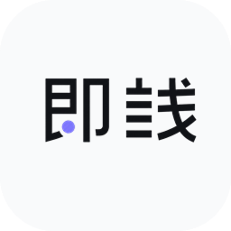

01 · AUTO DETECT
选目录，命令它来认
识别嵌套前后端、workspace、Electron / Tauri 与 Django。Vite 静态地址也能读取；未知入口标「待确认」。

即栈 / Quick Dev / win32
桌面别再摊一堆乱 cmd。选目录点自动识别：前端 / 后端 / 桌面 App、启动命令和端口——
直接生成启动方案，一套起飞，日志都在面板里。

从选目录到起飞，四步走完。识别按网页前端 / 后端服务 / 桌面 App / 待确认分类，再生成可改的启动方案。
浏览项目根目录，名称可留空自动用文件夹名
扫描根目录与嵌套服务目录，标好前端、后端与 App
按识别结果生成组合，在方案中直接调整每条命令
方案级启动 / 补齐 / 停止；成功可开网页或聚焦窗口
drag the handle · before / after
提示：拖动中间圆钮或直接点任意位置 · 左乱右清
识别嵌套前后端、workspace、Electron / Tauri 与 Django。Vite 静态地址也能读取；未知入口标「待确认」。
识别后自动生成推荐方案；重扫保留手动命令、端口与自定义组合。同一服务共用引用，托盘也能选方案。
输出进日志面板，关窗进托盘。热键唤起；开机仅托盘，不会偷跑全家 dev。
「查看占用详情」切到端口页、筛选、定位并展开进程链——谁占了 :3000 不用再 netstat。
// now
v__VERSION__ 已发布。软件内「设置 → 关于与更新」也能查看更新说明、检查并安装新版。
完全免费开源。数据只在 %LOCALAPPDATA%\QuickDev\，不收集账号，只在检查更新时联网。装好后软件内就能一键更新。
v__VERSION__ · Windows 10 / 11 · 不确定选哪个？设置 → 系统 → 系统信息 → 「系统类型」写着 ARM 就选 ARM64。也可以去 GitHub Releases 下载。